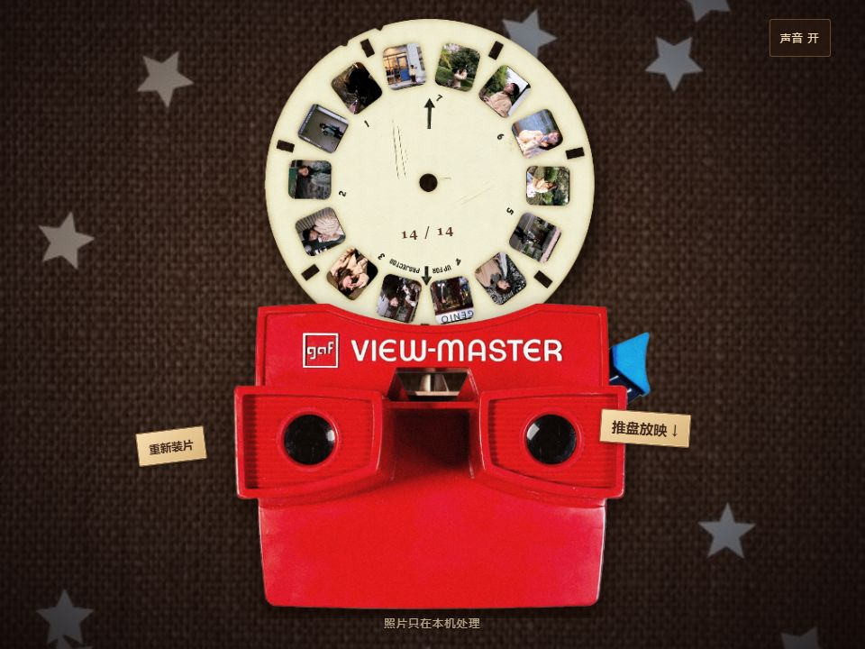
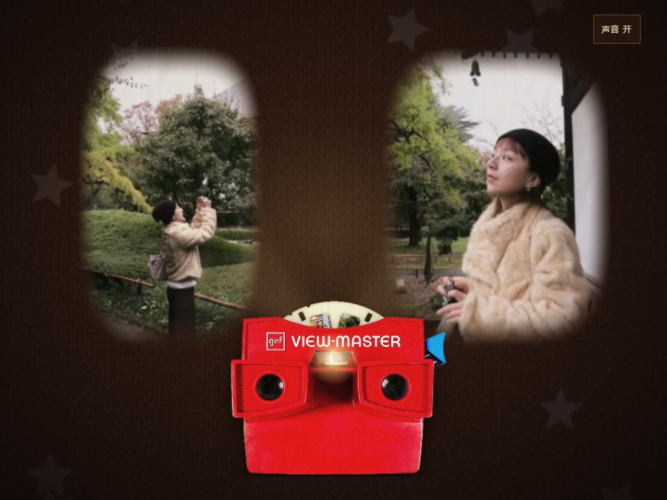
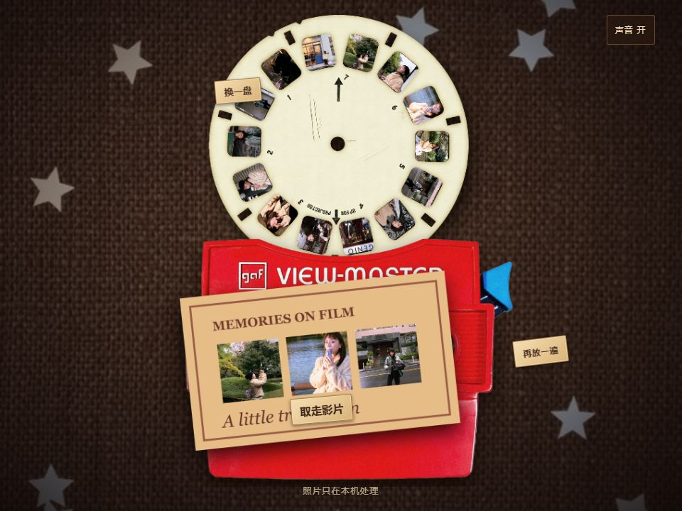

使用说明
装片
点「选 14 张照片」从设备选图，或者点「试放样片」。装好后可以点圆盘上的任意一格单独换照片。

放映
点「推盘放映 ↓」，等胶片盘滑入、放映灯亮起，照片就会开始播放。

取片
放完后点「取走影片」，将生成的视频保存到设备。

可以放些什么
- 把一趟旅行的沿途风景和合照剪在一起。
- 挑出宠物从小时候到现在的照片，做成一卷成长记录。
- 收齐一次朋友聚会的照片，做成可以转发的小影片。
点「选 14 张照片」从设备选图，或者点「试放样片」。装好后可以点圆盘上的任意一格单独换照片。

点「推盘放映 ↓」，等胶片盘滑入、放映灯亮起，照片就会开始播放。

放完后点「取走影片」，将生成的视频保存到设备。
